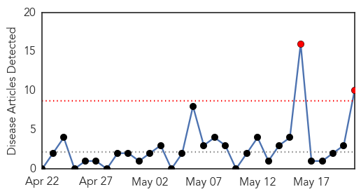

Hepatitis
30-Day Web Trend
2 alerts, 0 warnings

30-Day Twitter Trend
0 alerts, 0 warnings

Article Locations

Article Confidences

Top Articles:
- 0.941
- Hepatitis C testing advised for 936 Former patients at PeaceHealth Southwest Medical Center may have been exposed . News
- 0.878
- Up to 5,000 exposed to hepatitis A at restaurant
- 0.870
- Burger worker may have exposed thousands to hepatitis
- 0.796
- Burger worker may have exposed thousands to hepatitis
- 0.745
- CIA Halts Sham Vaccination Campaigns as Ploy for Intelligence Operations
- 0.720
- 936 in Vancouver possibly exposed to Hep C
- 0.658
- Health officials have set up hepatitis immunization clinics
- 0.629
- Prostate Cancer May Result From Sexually Transmitted Disease
- 0.607
- Pancreatic and Liver Disease Deaths Rise Due to Advancements in Other Cancer Care
- 0.605
- thenews.com.pk
Top Tweets:
-
No tweets found for May 21, 2014
Chikungunya
30-Day Web Trend
2 alerts, 3 warnings

30-Day Twitter Trend
2 alerts, 0 warnings

Article Locations

Article Confidences
Top Articles:
- 0.998
- Mosquito-Borne Breaking Bone Disease Spreads In Haiti
- 0.954
- Chikungunya fever confirmed in Palm Beach County man
- 0.953
- New Facility to Detect and Respond to Outbreaks of Infectious Disease
- 0.950
- WINN FM 98.9 - Twenty confirmed cases of Chikungunya in St. Kitts
- 0.915
- Mosquito-borne Chikunguna cases reported in Miami — MercoPress
Top Tweets:
-
No tweets found for May 21, 2014